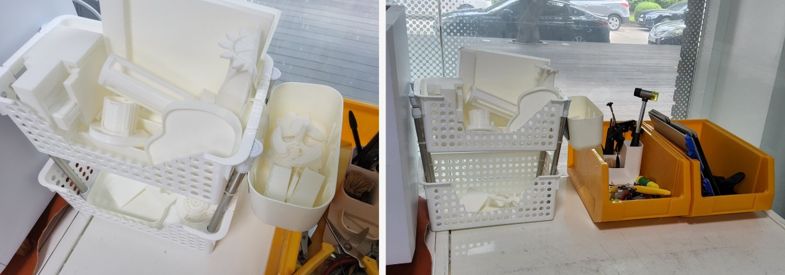
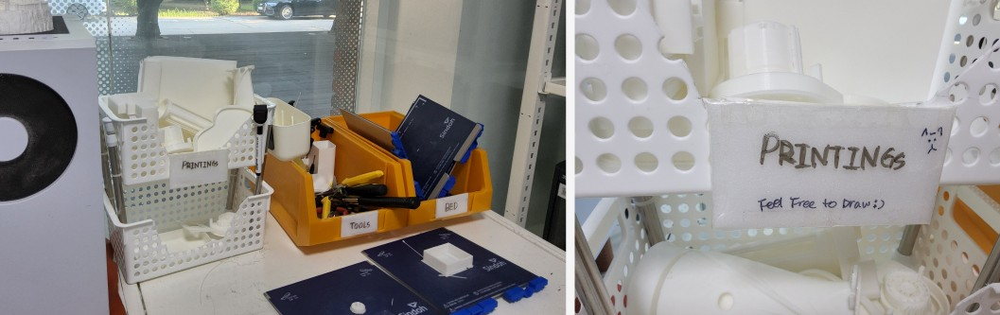

MAKING
TERRITORIES
I rearranged the space by adding a small shelf, separating containers, and later adding labels. The goal was not to create a completely new rule, but to make the existing categories physically and visually separate.
Temporary shelf + simple name tags
The first prototype made the room easier to read. Fewer support scraps and random parts were placed in the tool box. However, the shelf was too small, and small prints could fall through the gap.
P I C T U R E S

Custom shelf made with basket and tension rods
After the purchased shelf did not fit the space, I made a new shelf using a storage basket and tension rods. Even without name tags, the rough division between tools, beds, and prints seemed to remain.
P I C T U R E S

Labels + board marker
I added editable labels and placed a board marker nearby. However, no one tried to rewrite the labels. I realized that the intervention did not clearly invite participation yet.
P I C T U R E S
